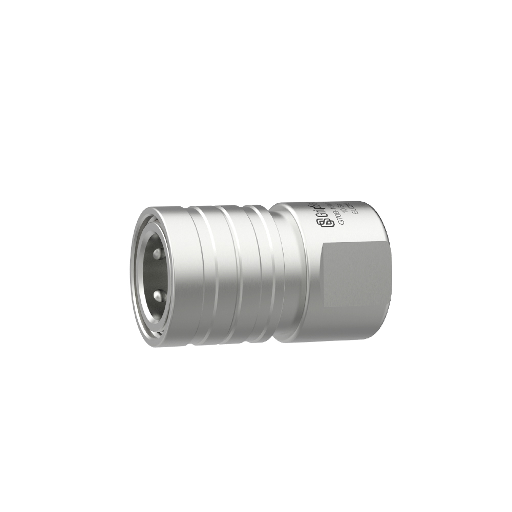
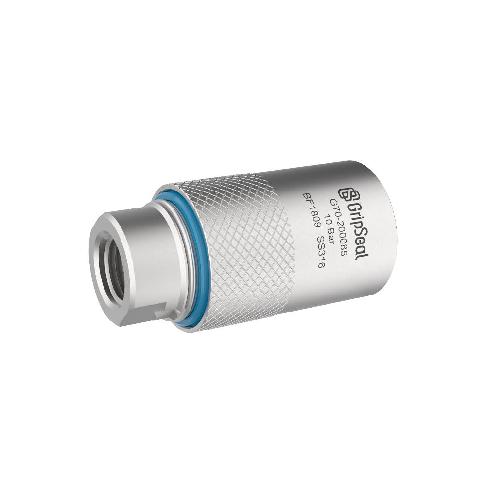

Model Overview
Series Detail Built Around the Real Interface
This model page follows a catalog-style structure for product details, model comparison, application notes, and engineering selection review.
Quick Facts
Request G70 Selection HelpTypical Use Direction
For industrial stations that need quick connection, repeatable sealing, and stable test or service rhythm.